Материална точка
В много случаи при изучаване движението на телата можем да се абстрахираме от техните размери, форма и вътрешна структура и да ги разглеждаме като точки. Например, ако се интересуваме от времето, за което експресът е изминал разстоянието София — Пловдив, можем да разглеждаме влака като точка, пренебрегвайки неговата дължина. Ако обаче искаме да определим времето, за което той минава покрай семафор или времето, за което пътник отива до вагон-ресторанта, тогава очевидно трябва да отчетем размерите на влака.
Материална точка се нарича тяло, чиито размери, форма и вътрешна структура са несъществени за дадена задача.
Понякога вместо материална точка ще използваме термина частица за означаване на тяло, чиито размери и структура не се отчитат. Ще подчертаем, че разглеждането на едно тяло като материална точка няма нищо общо с неговите действителни размери. Дори тела с огромни размери в определени задачи могат да се смятат за материални точки. Например Земята, при изучаване движението й около Слънцето, както и цялата Слънчева система, при разглеждане на движението и около центъра на Галактиката, се приемат за материални точки.
Път и преместване
Да разгледаме материална точка (частица), която се движи праволинейно спрямо земната повърхност. Правата, по която се извършва движението, ще изберем за ос . Положителната посока на оста и нейното начало О се избират произволно. Често за начало О се взема точката, в която частицата се е намирала в момент , от който започва да се отчита времето (начален момент). Ако частицата не променя посоката си на движение, удобно е за положителна посока на оста да се избере посоката на движение. Положението на частицата в даден момент от времето се определя от нейната координата . Ще обърнем внимание, че координатата е алгебрична величина: , когато точката лежи върху положителната част на оста, и , ако точката лежи върху отрицателната част на оста (Фиг. \ref{fig:1.1}). Нека в момент 1 частицата се намира в точка с координата , а в един следващ момент 2 в точка с координата . \begin{figure}[h!] \centering 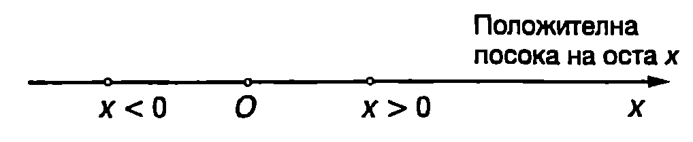 \caption{} \label{fig:1.1} \end{figure}
Величината
се нарича преместване на частицата за интервала от време . Преместването може да има както положителни, така и отрицателни стойности. Ако през цялото време частицата се движи в една посока, големината на преместването е равна на изминатия път, а знакът на преместването определя посоката, в която се извършва движението. Когато движението е в положителната посока на оста , тогава . При движение в обратната посока .
В Международната система (SI) пътят и преместването се измерват в метри. Ще подчертаем, че това са различни величини. Пътят е равен на разстоянието, изминато от частицата за време , и може да има само положителни стойности. Преместването се дефинира чрез равенство \eqref{eq:1.1}. Само при праволинейно движение в една посока големината на преместването за произволен интервал от време е равна на изминатия за същото време път. В общия случай големината на преместването е по-малка от изминатия път.
Пример 1.1
Частица извършва праволинейно движение по оста . В момент тя се намира в точка с координата , в момент в достига до точка , където променя посоката си на движение и в момент преминава през точка . Определете изминатия път, знака и големината на преместването за интервала от време . \end{psexample}
Решение
Изминатият път е . Преместването е .
Големината на преместването в различна от пътя, защото е станала промяна в посоката на движение.
Средна скорост
Средната скорост е величина, която широко се използва във всекидневието. В началото на полета стюардесата информира пътниците на каква височина и с каква средна скорост ще прелетят разстоянието. Средната скорост на автомобили, влакове, кораби и т.н. е важна характеристика на тяхното движение, особено когато се интересуваме колко време ще продължи пътуването. По определение средната скорост е равна на пътя , разделен на интервала от време , за което той е изминат
Средната скорост е скаларна величина, която може да има само положителни стойности. В SI се измерва в m/s (метър в секунда), но в практиката по-често скоростта се изразява в km/h (километра в час). Условно можем да отделим два случая, в които се пресмята средна скорост:
1. Интересуваме се с каква средна скорост е изминато дадено разстояние . За целта определяме времето , за което е изминато разстоянието , и от формула \eqref{eq:1.2} пресмятаме .
2. Интересува ни с каква средна скорост се е движило тялото през интервала от време . Тогава определяме пътя , изминат за това време, и отново по формула \eqref{eq:1.2} пресмятаме .
Пример 1.2
Автомобил изминава половината от разстоянието между два града със скорост , а втората половина - със скорост . Колко километра в час е средната скорост на автомобила? \end{psexample}
Решение
Задачата е от първия вид трябва да се определи времето , за което в изминато разстоянието между двата града. Първата половина от това разстояние е измината за време , а втората половина за време . Следователно
Пример 1.3
Пресметнете средната скорост на автомобила от Пример~\ref{ex:1.2}, ако през половината от времето той се е движил със скорост , а през втората половина - със скорост . \end{psexample}
Решение
Задачата е от втория вид — трябва да се определи разстоянието , което е изминал автомобилът за време . Отначало той се е движил със скорост и за време е изминал разстояние . След това за същото време в изминал разстояние . Целият път е Следователно
Моментна скорост
На Фиг. \ref{fig:1.2} е показана зависимостта на координатата от времето за частица, която се движи праволинейно. В момент частицата има координата , (точка от графиката), а в момент координатата й е (точка ). За време тя извършва преместване . Наклонът на отсечката спрямо абсцисната ос се определя от отношението :
Наклон = .
Величината се измерва в m/s, т.е. тя има размерност на скорост. Нейната стойност обаче зависи от избора на интервала от време , за който се пресмята, поради което дава малко информация за характера на движението. В това се убеждаваме, ако започнем да намаляваме интервала 4, т.е. да доближаваме точка към точка (Фиг. \ref{fig:1.2}). Наклонът на отсечката се променя и в граничния случай, когато интервалът клони към
\begin{figure}[h!] \centering 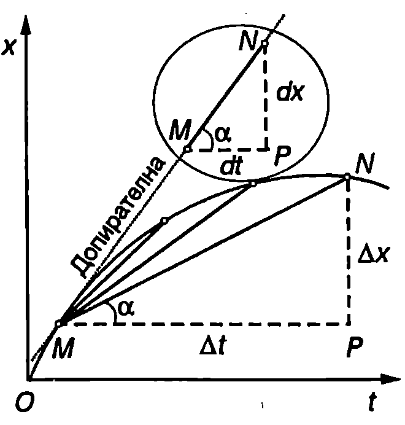 \caption{Моментна скорост. Когато , точките и са много близо една до друга и отсечката, която ги свързва, лежи върху допирателната към кривата , прекарана през точка (в уголемен вид отсечката при e показана вътре в окръжността в горната част на фигурата). Графично моментната скорост се определя по наклона на допирателната.} \label{fig:1.2} \end{figure}
нула, отсечката лежи върху допирателната към кривата , прекарана през точка . Величината
се нарича моментна скорост на частицата (на материалната точка). Както е известно от математиката, границата на отношението , когато клони към нула, е първа производна на функцията . Във физиката първата производна е прието да се означава (произнася се “де хикс де те”).
И така, моментната скорост е първа производна на координатата по времето
Графично моментната скорост се определя по наклона на допирателната към кривата .
Моментната скорост, за разлика от средната скорост, може да има както положителни, така и отрицателни стойности. Например в точка от Фиг. \ref{fig:1.3} допирателната сключва остър ъгъл с абсцисната ос () и функцията е растяща частицата се движи в положителната посока на оста и моментната и скорост е положителна (). В точка функцията е намаляща (), което показва, че частицата се движи в отрицателната посока на оста . В този случай моментната скорост е отрицателна (). В точка моментната скорост е нула: частицата променя посоката си на движение.
Движения, които се извършват с постоянна моментна скорост, се наричат равномерни движения. Ако моментната скорост се изменя с течение на времето, движението е неравномерно. \begin{figure}[h!] \centering 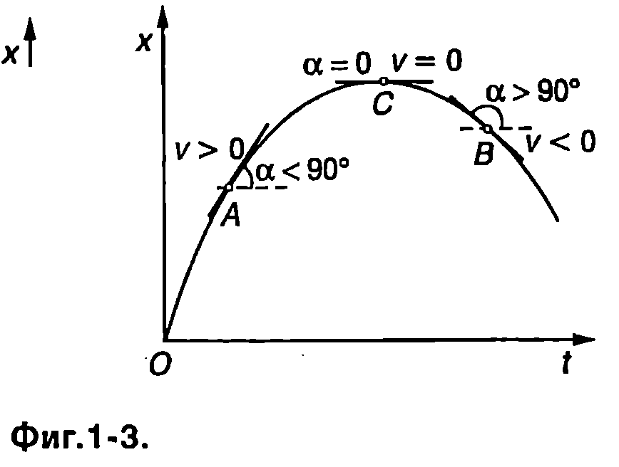 \caption{} \label{fig:1.3} \end{figure} Ще подчертаем, че моментната скорост характеризира движението в много малък интервал от време . Интервалът e толкова малък, че през него не настъпват практически никакви изменения на скоростта, т.е. за време от движението е равномерно. Моментната скорост може да се разглежда като средна скорост, пресметната за много малък интервал от време . По-нататък за краткост моментната скорост ще наричаме просто скорост на тялото.
Ускорение
На Фиг. \ref{fig:1.4a} е представена графично зависимостта на скоростта от времето за частица, която извършва неравномерно праволинейно движение. В момент частицата се движи със скорост (точка от графиката), а в момент скоростта й е (точка ). За интервала от време изменението на скоростта на частицата е . Отношението носи информация за бързината, с която се променя скоростта. Ако се намали интервалът от време (точка се приближава към точка ), наклонът на отсечката се променя (изменя се ъгълът ). В граничния случай, когато клони към нула, ъгълът , който отсечката сключва с абсцисната ос , става равен на ъгъла между оста и допирателната към кривата , прекарана през точка (Фиг. \ref{fig:1.4a}). Величината
\begin{figure}[h!] \centering 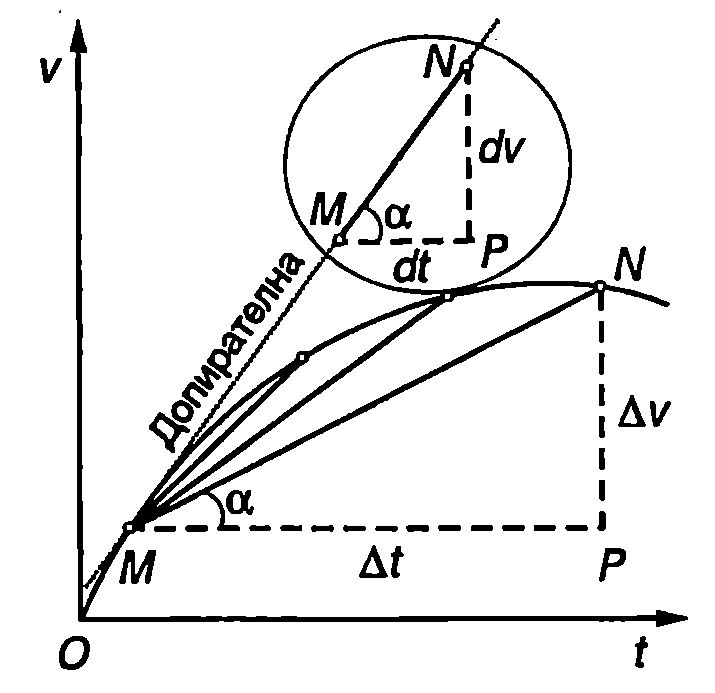 \caption{Ускорение. Когато , точките и са много близо една до друга и отсечката, която ги свързва, лежи върху допирателната към кривата , прекарана през точка (в уголемен вид отсечката при е показана вътре в окръжността в горната част на фигурата). Графично ускорението се определя по наклона на допирателната.} \label{fig:1.4a} \end{figure}
се нарича ускорение на частицата (на материалната точка). Ускорението е равно на първата производна на скоростта по времето. Тъй като самата скорост е първа производна на координатата по времето , ускорението може да се представи като втора производна на координатата по времето
(Чете се “де две хикс де те квадрат”). Ускорението е мярка за бързината, с която се променя скоростта. В SI то се измерва в (метър в секунда на квадрат). Графичното определяне на ускорението се илюстрира от Фиг. \ref{fig:1.4b}. Ускорението в точка е равно на наклона на допирателната към кривата , прекарана през тази точка. Наклонът на допирателната може да се определи, ако се знаят координатите на две произволни точки и , лежащи върху нея. Удобно е тези точки да се изберат така, че от графиката лесно да се определят координатите им. В случая \begin{figure}[h!] \centering 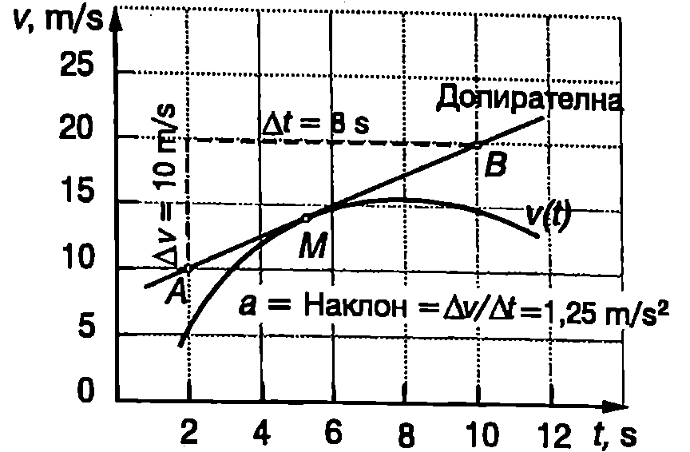 \caption{} \label{fig:1.4b} \end{figure}
Подобно на скоростта, ускорението може да има както положителни, така и отрицателни стойности. От формула \eqref{eq:1.5} се вижда, че ускорението е положително при , т.е. когато скоростта нараства.
Забележка. Ще припомним, че дефинирахме моментната скорост при праволинейно движение като алгебрична величина, която може да има както положителни, така и отрицателни стойности. Положителната моментна скорост нараства при . Ако обаче моментната скорост в отрицателна, при тя също нараства, независимо че големината (модулът) и намалява. За да не възникват недоразумения, знакът на ускорението е по-добре да се интерпретира по следния начин: ако знаците на скоростта и на ускорението на частицата са еднакви, големината на скоростта нараства. Когато знаците са противоположни, големината на скоростта намалява. На тези въпроси ще се спрем по-подробно в следващия параграф, където ще разгледаме скоростта и ускорението като векторни величини.
Равнопроменливо движение
Движения, които се извършват с постоянно по големина ускорение, се наричат равнопроменливи движения. При равнопроменливо движение наклонът на допирателната във всички точки от графиката на функцията е еднакъв. Следователно функцията е права линия (Фиг. \ref{fig:1.5}), чието уравнение е
където е началната скорост, т.е. скоростта на частицата в момент . Горното уравнение изразява закона за скоростта при равнопроменливо движение. \begin{figure}[h!] \centering 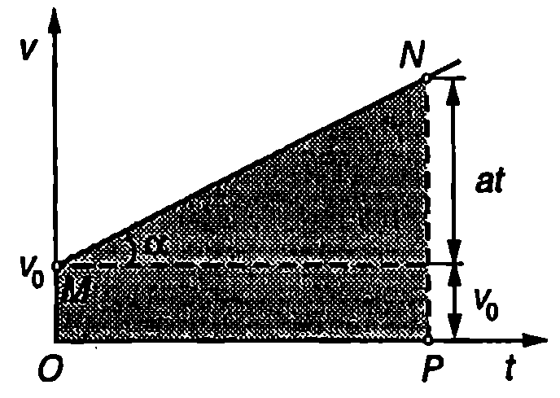 \caption{} \label{fig:1.5} \end{figure}
Равнопроменливо движение, при което големината на скоростта нараства, се нарича равноускорително движение. Ако големината на скоростта намалява, движението в равнозакъснително.
В уравнение \eqref{eq:1.7} величините ,, и могат да имат както положителни, така и отрицателни стойности. Когато не става промяна на посоката на движение, е по-удобно законът за скоростта да се запише в следния вид
където , и са съответно големините на скоростта, на началната скорост и на ускорението. Знакът +'' е за равноускорително движение, а знакът -” е за равнозакъснително движение.
Законът, по който се изменя преместването , може да се определи графично. Например при праволинейно равномерно движение
където и са координатите на частицата в началния момент и в момента . Графиката на скоростта при равномерно движение е показана на Фиг. \ref{fig:1.6}а. Лицето на правоъгълника под графиката (защрихованата площ на Фиг. \ref{fig:1.6}а), е
\begin{figure}[h!] \centering 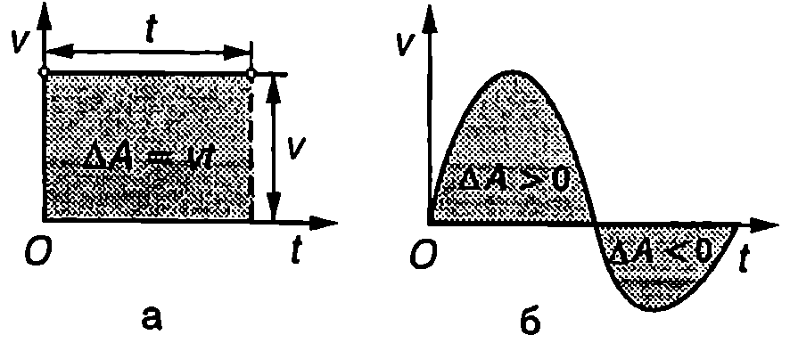 \caption{} \label{fig:1.6} \end{figure} От уравнения \eqref{eq:1.9} и \eqref{eq:1.10} следва, че , т.е. преместването е равно на площта на фигурата, образувана от графиката на скоростта и абсцисната ос . Този резултат се обобщава за произволно неравномерно движение. Площта се смята за положителна, ако графиката лежи над абсцисната ос, и за отрицателна в обратния случай (Фиг. \ref{fig:1.6}б).
Да се върнем към равнопроменливото движение (Фиг. \ref{fig:1.5}). От казаното дотук става ясно, че преместването , което частицата извършва за време, е равно на площта на трапеца
След прости преобразувания се получава
Уравнение \eqref{eq:1.12} изразява закона за преместването при равнопроменливо праволинейно движение. Ще напомним, че в него величините , и могат да имат както положителни, така и отрицателни стойности. Ако не се извършва промяна на посоката на движение, законът за изминатия път е
където е големината на началната скорост, — големината на ускорението. Знакът +'' е за равноускорително движение, а знакът -” е за равнозакъснително движение.
Пример 1.4
Мотоциклетист, който се движи със скорост , забелязва дете да пресича пътя и натиска спирачките. Пресметнете пътя , изминат от мотоциклета:
а) докато скоростта му намалее два пъти; б) до пълното спиране.
Ускорението да се приеме за постоянно, с големина . \end{psexample}
Решение
От законите за големината на скоростта и за изминатия път изключваме времето и след прости преобразования получаваме
при равноускорително движение и
при равнозакъснително движение.
Уравнения \eqref{eq:1.14} и \eqref{eq:1.15} е удобно да се използват при решаване на задачи, в които се търсят пътят или ускорението, а са известни началната и крайната скорост.
Преди да извършим пресмятанията, трябва да превърнем числените стойности на физичните величини в единици, които съответстват на SI;
а)
б)
Ще отбележим, че ускорението , което може да се получи при спиране на превозно средство, зависи от триенето между гумите и пътната настилка и не може да надминава някаква определена стойност. Спирачният път е правопропорционален на квадрата на началната скорост . Ако началната скорост се увеличи два пъти, спирачният път нараства четири пъти. Затова безопасността на движението изисква в участъци с намалена видимост или на места, където има опасност от внезапна поява на деца или животни на платното, да се кара с намалена скорост и с повишено внимание.
Земно ускорение
От всекидневния опит е известно, че телата се привличат към Земята. Оставени без опора, те падат към нейната повърхност, като скоростта им нараства. Такова движение се нарича свободно падане. Ускорението, с което се движат телата при свободно падане, се нарича земно ускорение. Ще приемем, че гравитационното привличане към Земята е единственият фактор, който определя свободното падане на телата и ще пренебрегнем съпротивлението на въздуха. Пръв Галилео Галилей е установил, че при такива условия:
1. Земното ускорение в еднакво за всички падащи тела, независимо от тяхната маса, размери и форма.
2. Земното ускорение е постоянно. То не се изменя по време на падането.
Лесно е да забележим несъответствие между тези изводи и наблюденията ни от всекидневния опит. Например ябълката пада по-бързо от перото, което е в противоречие с твърдение 1. При падане от голяма височина, ускорението постепенно намалява и накрая движението става равномерно (), което не се съгласува с твърдение 2. Причина за посочените привидни несъответствия е съпротивлението на въздуха. Във вакуум ябълката и перото падат едновременно, т.е. те се движат с еднакво ускорение (Фиг. \ref{fig:1.7}). Ускорението при свободно падане в близост до земната повърхност се означава с . То е приблизително равно на
Ако в началния момент тялото е било в покой, свободното падане се извършва по права линия, вертикално надолу. Направлението на вертикалната линия може да се определи с отвес тежко тяло, окачено на нишка. Продължението на вертикалната (отвесна) линия преминава през центъра на Земята.
\begin{figure}[h!] \centering 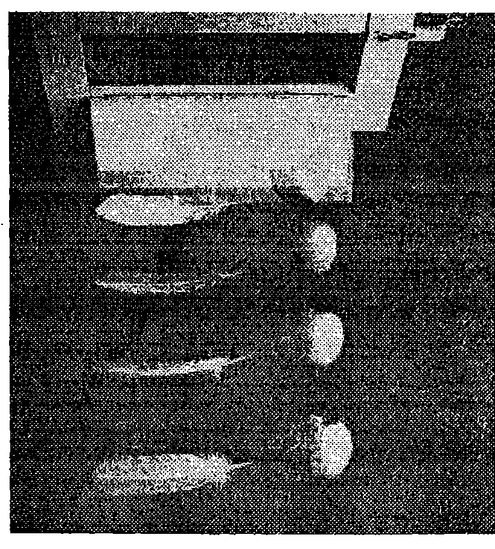 \caption{Свободното падане на ябълката и на перото във вакуум се извършва с еднакво ускорение . Снимката показва положението на двете тела през равни интервали от време. Разстоянието между образите се увеличава, защото при свободното падане скоростта непрекъснато нараства.} \label{fig:1.7} \end{figure}
Ще отбележим, че денонощното въртене на Земята води до слаба зависимост на земното ускорение от географската ширина, а също до отклонение на отвеса от посоката към центъра на Земята. На тези въпроси ще се спрем по-подробно в \ref{sec:7}.
Земното ускорение зависи също от надморската височина, на която се намира тялото. Например при издигане на височина 30 km, земното ускорение намалява с около . Неправилната форма на Земята и нееднородностите в нейната структура също предизвикват малки изменения в земното ускорение за различните точки от земната повърхност.
Влиянието на изброените фактори върху земното ускорение в повечето случаи може да се пренебрегне. Освен това, в примерите и задачите от тази глава ние ще пренебрегваме съпротивлението на въздуха и ще използваме формулите, получени за движение с постоянно ускорение, за описване на свободното падане на телата.
Пример 1.5
Тяло е пуснато без начална скорост от височина . Определете:
а) времето, за което тялото достига земната повърхност:
б) скоростта, с която тялото достига земната повърхност. \end{psexample}
Решение
а) Времето за падане определяме от закона за пътя при равноускорително движение без начална скорост (), което се извършва с ускорение :
б) От закона за скоростта за равноускорително движение без начална скорост изразяваме времето и го заместваме в закона за пътя:
Пример 1.6
Тяло е хвърлено вертикално нагоре с начална скорост . Определете времето на издигане и максималната височина, до която достига тялото. \end{psexample}
Решение
Движението на тялото е равнозакъснително — скоростта намалява по линейния закон . В най-горната точка, където става промяна на посоката на движение, скоростта е нула. От уравнението определяме времето за издигане
Заместваме времето в закона за пътя при равнозакъснително движение и определяме максималната височина:
Сравняването на резултатите от Пример~\ref{ex:1.5} и Пример~\ref{ex:1.6} показва, че когато едно тяло е хвърлено вертикално нагоре:
-
времето за издигане е равно на времето за падане;
-
скоростта, с която тялото пада на земната повърхност, е равна на началната скорост, с която е било хвърлено вертикално нагоре.
Ще подчертаем, че тези резултати са в сила, когато съпротивлението на въздуха в пренебрежимо малко. В действителност, поради съпротивлението на въздуха, времето за издигане е по-малко от времето за падане, а скоростта, с която тялото достига точката на хвърляне, винаги е по-малка от началната скорост.
Задачи
- Частица се движи по оста . Координатата на частицата се изменя с течение на времето по закона , където = 2 m/s. . Определете:
а) Скоростта и ускорението на частицата в момент ;
б) Средната скорост, с която се движи частицата през първите 3 s.
- Частица започва да се движи в положителната посока на оста . Координатата на частицата се изменя с течение на времето по закона , където m, m/s, . Определете:
а) координатата на частицата в началния момент ;
- скоростта и ускорението на частицата в момент s;
в) на какво максимално разстояние от координатното начало ще се отдалечи частицата и как ще се движи след това.
- Докажете, че средната скорост при равнопроменливо движение е равна на средното аритметично на началната скорост и крайната скорост : .
\begin{figure}[h!] \centering 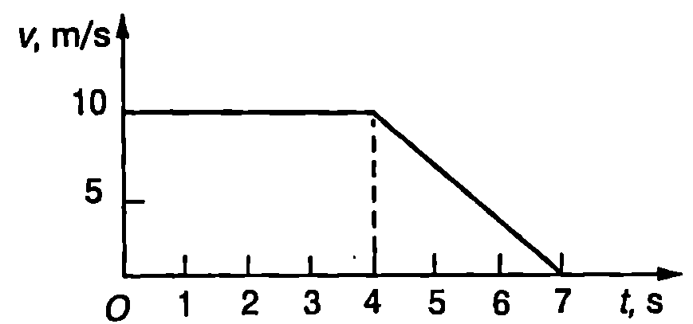 \caption{} \label{fig:1.8} \end{figure}
- На Фиг. \ref{fig:1.8} е показана графиката на скоростта на автомобил, който извършва праволинейно движение. Опишете движението на автомобила и определете стойностите на величините, които го характеризират. Определете графично пътя, който изминава автомобилът.
\begin{figure}[h!] \centering 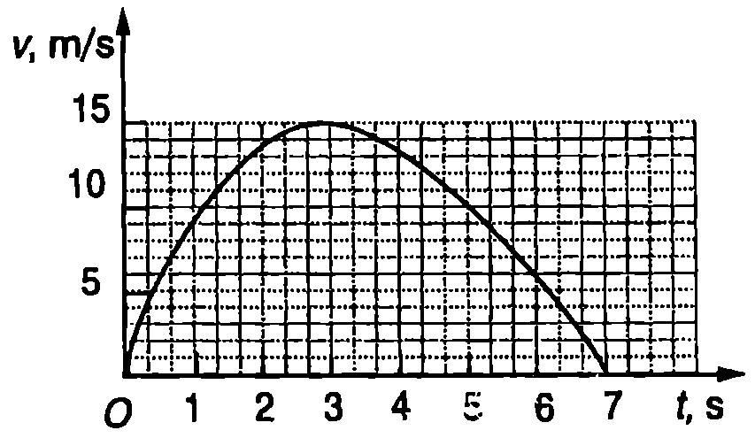 \caption{} \label{fig:1.9} \end{figure}
- На Фиг. \ref{fig:1.9} е представена графиката на скоростта на частица, извършваща праволинейно движение. Определете графично преместването на частицата.
Указание. Използвайте мрежата, за да определите заградената от графиката площ.
\begin{figure}[h!] \centering 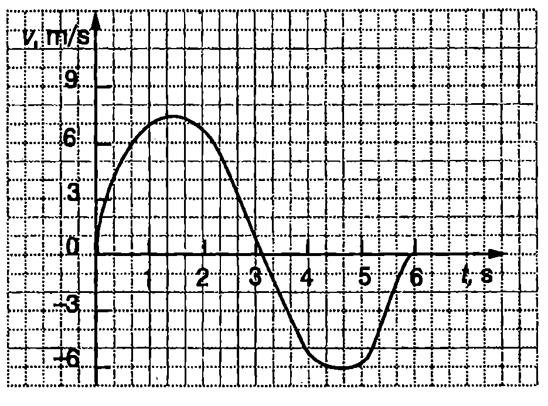 \caption{} \label{fig:1.10} \end{figure}
-
На Фиг. \ref{fig:1.10} е показана графиката на скоростта на частица, извършваща праволинейно движение. Определете графично преместването на частицата и изминатия от нея път.
-
Асансьор започва да се издига равноускорително. През първата секунда той изминава 1 m. Какъв път ще измине асансьорът през втората секунда?
-
Автомобил от Формула 1 излиза на праволинеен участък от пистата и увеличава скоростта си от 108 km/h на 324 km/h за 5 s. Колко е ускорението на автомобила? Какво разстояние изминава автомобилът за това време? Движението е равноускорително.
-
Мотоциклет, който се движи с постоянна скорост 72 km/h, пресича кръстовище при червен светофар. В същия момент от кръстовището тръгва с постоянно ускорение полицейски автомобил и настига нарушителя на 600 m след кръстовището. Колко е ускорението на автомобила?
-
В цевта на автомат “Калашников” куршумът се движи равноускорително и излита от нея със скорост m/s. Колко е ускорението на куршума? Дължината на цевта е cm.
-
Преди да отвори парашута, парашутист пада със скорост 60 m/s. Непосредствено след отварянето на парашута движението е равнозакъснително с ускорение . За да се приземи безопасно, парашутистът трябва да достигне земната повърхност със скорост 5 m/s. На каква минимална височина трябва да се отвори парашутът?
-
От товарен влак, който се движи с постоянна скорост 36 km/h, се откача последният вагон. Вагонът се движи равнозакъснително и спира след 30 s. Колко метра е разстоянието между влака и вагона в момента на спирането на вагона?
-
По-прецизното пресмятане на спирачния път изисква в него да се включи и разстоянието, което автомобилът изминава, преди водачът да успее да задейства спирачките.
Автомобил се движи със скорост 90 km/h. Водачът вижда пред себе си пресичащ магистралата човек и 0,8 s след това задейства спирачките. Колко метра в спирачният път на автомобила? Ускорението да се смята за постоянно, равно по големина на .
- Ускорението на свободно падане на повърхността на Луната е 6 пъти по-малко от земното ускорение . Камък, хвърлен вертикално нагоре, се издига на височина 20 m над земната повърхност. На каква височина ще се издигне камъкът, ако се хвърли със същата начална скорост от повърхността на Луната?